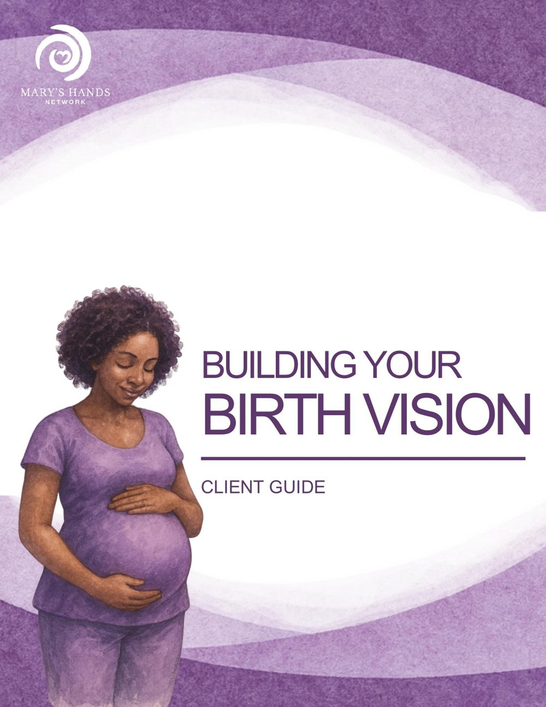
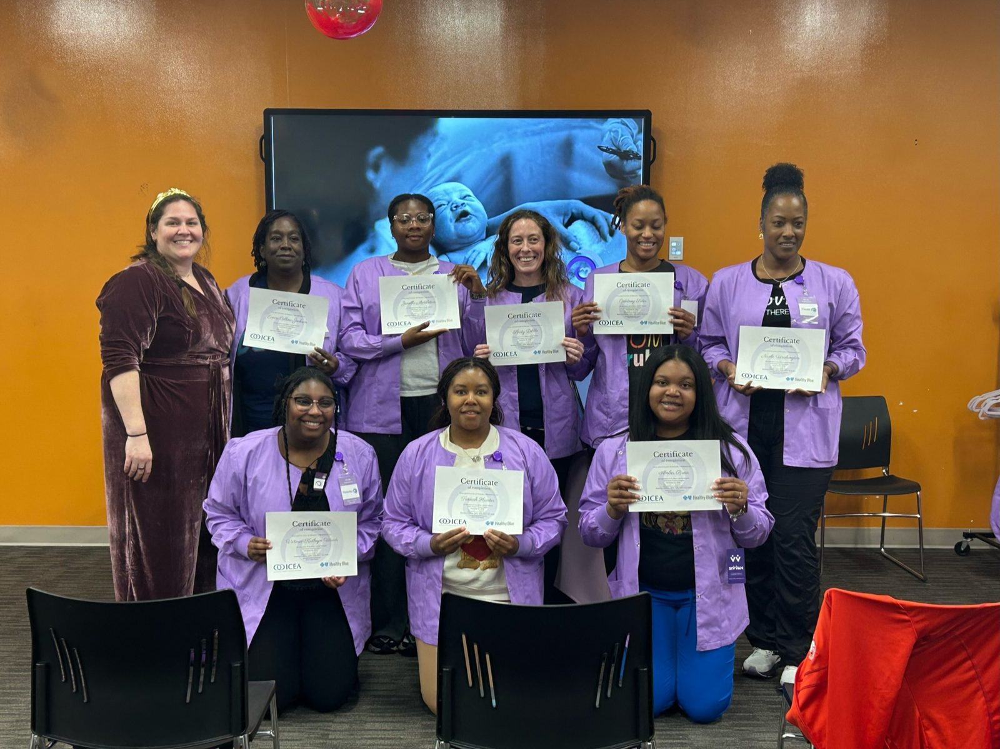
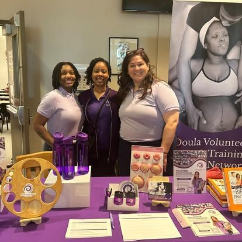

Todo nacimiento merece una doula.
Mary's Hands Network ofrece cuidado gratuito de doula en todo Luisiana y capacita doulas voluntarias comunitarias a través de un programa aprobado por ICEA. Cerramos la brecha de equidad en salud, una familia, un parto, un par de manos a la vez.
¿Cuál es tu camino?
Estoy esperando un bebé
Solicita una doula voluntaria gratis que te acompañe durante el parto, el nacimiento, y las primeras ocho semanas posparto. La solicitud toma 15 minutos.
Comenzar tu solicitudQuiero ser doula
Entrenamiento híbrido certificado por ICEA, becas completas y parciales, y una red de voluntarias que te apoya mucho después de la certificación.
Ver el entrenamientoQuiero apoyar el trabajo
$50 financia un kit de parto. $950 financia un lugar en el entrenamiento. Cada donación es deducible de impuestos y va a una línea específica que podemos mostrarte.
Ver formas de donarCuando nos necesites, día o noche.
Llama o envía un mensaje a la Línea Directa cuando lo necesites. ¿Eres clienta? Te conectamos con tu equipo o activamos cobertura de respaldo. ¿Aún no? Haz una pregunta, solicita una doula, o simplemente habla con alguien que entiende.
Nunca necesitas una cita. Nunca necesitas pedir disculpas por llamar.
Un mapa para tu parto, no un plan rígido.
La Guía de Visión del Parto es una herramienta gratuita para explorar tus opciones, compartir tus esperanzas, y comenzar conversaciones significativas con tu equipo de cuidado.
Piénsalo como un mapa para tu jornada de parto, una herramienta para prepararte mientras te mantienes flexible cuando las cosas cambian.
Descargar la Guía (PDF)
Los números que cuentan.
Luisiana es uno de los peores estados para la salud materna. Estos son los resultados que viven nuestras familias.
La mitad de cesáreas para nuestras mamás.
Tasa de cesárea de 13.3%, versus 36.1% del estado.
Menos de un cuarto de la tasa de prematuros del estado.
2.2% versus 13.4% del estado.
Lactancia dentro de las primeras 2 horas.
Muy por encima de los promedios estatales y nacionales.
Entrena a una doula. Sirve a docenas de familias.
Una beca completa de entrenamiento.
Patrocina una doulaEmpoderamos a las familias, promovemos la excelencia en el parto, y cerramos la brecha de equidad en salud en Luisiana.
Luisiana se encuentra consistentemente entre los peores estados del país para los resultados de salud materna. Nuestra tasa de mortalidad materna es de 58.1 por cada 100,000 nacimientos vivos, más del doble del promedio nacional. Las mujeres negras enfrentan un riesgo de mortalidad de tres a cuatro veces mayor que las mujeres blancas.
Esta es la brecha que MHN fue creada para cerrar. A través de doulas voluntarias capacitadas, servicios comunitarios integrales, y datos de resultados aprobados por IRB, llevamos cuidado basado en evidencia y culturalmente humilde a cada familia que lo solicita, sin importar ingresos, origen, o código postal.
"Esa es la primera doula en la historia escrita, y ella es nuestra inspiración. Damos apoyo como la doula original."Madeline LeBlanc · Fundadora
Tres estrategias entrelazadas.
Capacitación de doulas voluntarias
Reclutamos, capacitamos, y apoyamos a una comunidad de doulas voluntarias bien entrenadas. 254 capacitadas. 155 sirviendo activamente en todo el sureste de Luisiana.
Ver el programa →Servicios integrales
Acceso a alimentos, estabilidad de vivienda, transporte, apoyo emocional. Abordamos los determinantes sociales de la salud en cada visita.
Para futuras mamás →Cambio basado en datos
Nuestro estudio aprobado por IRB con Baton Rouge General Medical Center rastrea cada parto. El caso del cuidado de doula se construye con evidencia real.
En sus propias palabras.
Mi doula se quedó conmigo durante treinta horas de parto. Sabía cuándo hablar, cuándo presionar mi espalda, y cuándo solamente estar ahí. Tuve el parto que deseaba porque ella estaba a mi lado.Clienta, Baton Rouge
No sabía que una doula podía ser gratis. Mi equipo vino a mis visitas posparto, me ayudó con la lactancia, y me revisaba cuando estaba sola. Me trataron como familia.Clienta, Nueva Orleans
Me ayudaron a hacer las preguntas que no sabía cómo hacer. Sentí que mis médicos me escuchaban por primera vez. Eso solo cambió toda mi experiencia.Clienta, Lafayette
El trabajo, en la vida real.
Días de entrenamiento, certificaciones, y el trabajo silencioso de acompañar a las familias de Luisiana.



Tu lugar está aquí.
Ya sea que estés esperando, ya seas mamá, o sientas el llamado de servir, tu historia tiene un lugar en Mary's Hands.